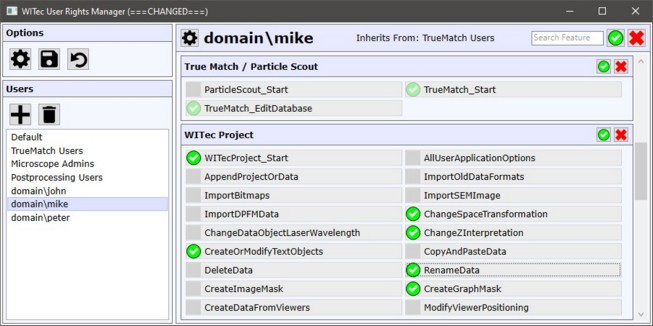
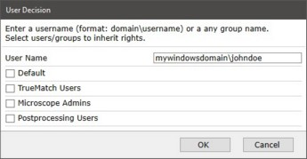

|
WITec用户管理器应用程序
|

选项
高级
在此处可以停用整个用户权限管理。
此处还显示用户管理文件所在的保存路径。
保存
保存当前的用户管理设置。
重新加载/撤销
从文件重新加载用户管理设置，撤销所有更改。
用户
添加

使用此对话框可以添加或编辑用户。
用户名可以是带有域和登录名的Windows登录用户名称（例如mycompany\johndoe），也可以是用于权限继承的自定义组名（例如定义一个名为"TrueMatch Users"的组，其成员将继承该组的权限）。
要从其他用户或组继承权限，只需在用户名下方勾选或取消勾选复选框即可。
删除
删除用户或组。
默认
这是默认用户。所有未在用户权限中明确定义的用户将获得默认权限。
用户详情（右侧）
编辑用户
参见添加。
继承来源
显示当前显示的用户所继承权限的来源用户或组。
搜索功能
输入搜索文本以查找任何用户权限功能。
全部/无
点击全部/无来允许/拒绝用户或某个类别的所有功能。
功能
点击任何单个用户权限功能来允许或拒绝该功能。